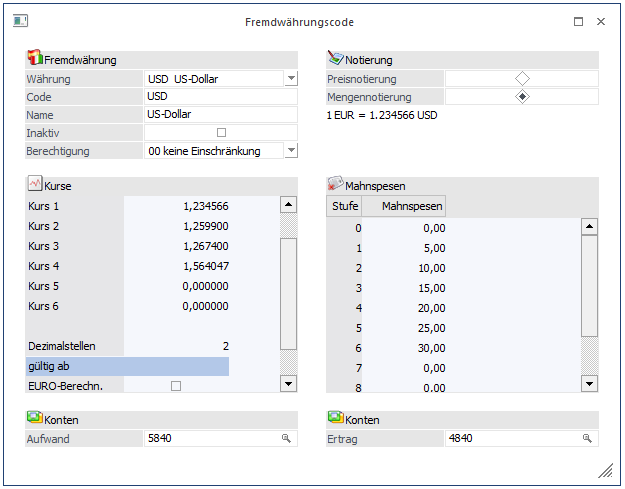
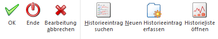
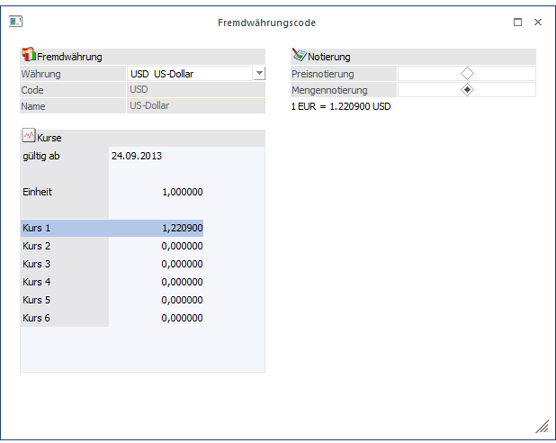

In der Fremdwährungstabelle werden die im Unternehmen verwendeten Fremdwährungen sowie die Umrechnungskurse hinterlegt.
Ø Währung
Aus der Auswahllistbox kann eine Währung ausgewählt werden, die bearbeitet werden soll. Wird der Eintrag "NEUEINGABE" gewählt, kann eine neue Fremdwährung angelegt werden.
Ø Code
3stellig, alphanumerisch. Kurzcode zum Aufruf der Fremdwährung (z.B. USD, CHF)
Ø Name
20stellig, alphanumerisch. Fremdwährungsbezeichnung; Textierung, die am Fremdwährungskonto angedruckt wird.

Ø Inaktiv
Wenn ein Datensatz auf Inaktiv gesetzt wird, hat das die Auswirkung, dass er nicht mehr im Matchcode angezeigt wird.
Ø Berechtigung
Für jeden Fremdwährungscode kann ein Berechtigungsprofil vergeben werden. Wenn der Anwender einen Code aufruft, wird geprüft, ob der Anwender einer Benutzergruppe zugeordnet wurde, welche in dem jeweiligen Profil enthalten ist und ob somit eine Bearbeitung erlaubt wäre (nähere Informationen entnehmen Sie bitte dem WinLine ADMIN - Handbuch).
Hinweis
Benutzern des Typs "Administrator" oder mit der Administratorenberechtigung "Benutzeradministrator" steht in der Auswahlbox der Punkt ">> Neues Profil" zur Verfügung. Über die Anwahl dieses Eintrags kann in der Folge ein neues Berechtigungsprofil angelegt werden.
Ø Notierung
Mit den 2 Radiobuttons kann die Notierung der Fremdwährung festgelegt werden.
ü Preisnotierung
Preis, der für
eine Einheit Auslandswährung in Inlandswährung bezahlt werden muss:
z.B. 1
USD entspricht 1,02 EURO
ü Mengennotierung
Betrag an
ausländischen Währungseinheiten, der für eine Einheit Inlandswährung zu
entrichten ist:
z.B. 1 EURO entspricht 0,92 USD
Darunter wird die Notierung im Klartext mit den, in der Einheit und dem ersten Kurs, eingegebenen Werten angezeigt.
Ist im Mandantenstamm die Checkbox "FW-Preise beziehen sich auf den Euro" aktiviert, wird als Landeswährung "EUR" angezeigt; ansonsten (z.B. in einem amerikanischen Mandanten) die erste Landeswährung.
Diese Einstellungen werden natürlich in jeder Anwendung sowie bei jedem Jahreswechsel usw., wo mit Fremdwährungen gearbeitet wird, berücksichtigt.
Kurse
Ø Einheit
Angabe der Fremdwährungseinheit, für welche der Umrechnungskurs gültig ist. Der Betrag in Landeswährung wird nach der Formel Fremdwährungsbetrag/Einheit x Kurs berechnet.
Ø Umrechnungskurs
Es können sechs verschiedene Kurse hinterlegt werden, von denen jeder max. 14stellig (8 Vor- und 6 Nachkommastellen) ist. Multiplikationsfaktor für Umrechnung der Fremdwährung.
Beispiel für die richtige Eintragung von Kursen in Bezug zur EURO-Umrechnung (Notierung = Preisnotierung):
|
Währung |
Einheit |
Kurs |
|
ATS |
13,7603 |
1 |
|
EUR |
1 |
1 |
|
DEM |
1,95583 |
1 |
|
USD |
1,2637 |
1 |
Der Dollar wird ebenso in die Tabelle eingetragen wie die Währungen der europäischen Union, da dieser ja ebenfalls über den EURO zum Schilling gerechnet wird.
Durch den Eintrag 1 in der Einheit und im Kurs beim EURO, wird gewährleistet, dass die FW über den EURO gerechnet werden.
Die Bezeichnung der 6 Kurse kann im WinLine START unter Optionen / FIBU Parameter vergeben werden.
Hinweis
Welcher dieser 6 Kurse in der Belegerfassung verwendet werden soll, kann in der Belegart gesteuert werden.
Ø Dezimalstellen
Standardmäßig steht die Einstellung auf 2, d.h. bei jedem Wert, der in dieser Fremdwährung eingegeben wird, stehen max. 14 Stellen für die Berechnung von Summenvariablen (z.B. in Bilanzen, Saldenliste, Summen in der Belegerfassung etc.) zur Verfügung. Bei Währungen mit sehr niedrigen Kursen (z.B. Lire) kann es sein, dass Zahlen errechnet werden müssen, die mehr als 14 Stellen benötigen (und das sind immerhin 99,999,999,999.99). Für diesen Fall kann nun die Kommastelle für den Summierungsvorgang nach links verschoben werden, was zur Folge hat, dass für die Bildung der Summenvariable z.B. nicht nur 14 sondern 16 Vorkommastellen gerechnet werden können (hier müsste die Anzahl d. Nachkommastellen z.B. auf 0 gesetzt werden).
Ø gültig ab
In diesem Feld kann das Datum eingegeben werden, ab wann der Kurs gültig ist. Wird ein neues "gültig ab" - Datum eingetragen, werden die Kurse und das dazugehörige Datum extra gespeichert. Bei der Erfassung kann dann zwischen den verschiedenen Kursen gewählt werden. Pro Gültigkeitsdatum können bis zu 6 verschiedenen Kursen gespeichert werden.
Ø EURO-Berechnungsmethode
Wird diese Checkbox gesetzt, so bedeutet das, dass dieser Kurs bei der Bearbeitung nicht mehr verändert werden kann - da der Kurs mit dem 31.12.1998 festgeschrieben wurde, sind keine Änderungen erforderlich. Allfällige Änderungen des Kurses können nur mehr von Administratoren (siehe WinLine ADMIN-Handbuch) durchgeführt werden.
Diese Checkbox muss bei allen Währungen aktiviert werden, die dem EURO angehören, auch dann, wenn der Mandant noch nicht auf EURO umgestellt wurde. Bei den Währungen, die nicht dem EURO angehören (USD, CHF etc.) sollte diese Checkbox nicht gesetzt sein - ansonsten kann z.B. während des Buchens keine Kursänderung vorgenommen werden.
Ø Mahnspesen
Stammverwaltung der Mahnspesen in Fremdwährung, wobei für jede Mahnstufe ein Mahnspesenbetrag in Fremdwährung vergeben werden kann.
Ø Konten Aufwände / Erträge
Eintrag der Automatikkonten für die automatische Buchung von Kursdifferenzen.
Buttons

Ø Historieeintrag suchen
Mit dem "Historieeintrag suchen"-Button kann die Kursentwicklung einer Währung betrachtet werden. Wenn bei einer Währung ein "gültig ab" Datum eingetragen wurde, werden die verschiedenen Kurse gespeichert und können über die Historie abgerufen werden.
Ø Neuen Historieeintrag erfassen
Durch Anklicken des Buttons kann ein neuer FW-Kurs mit einem neuen Gültigkeitsdatum hinzugefügt werden.

Dabei können allerdings nur die Felder "gültig ab", "Einheit" und "Kurs1 bis Kurs6" bearbeitet werden. Die Änderungen werden durch Anklicken des OK-Buttons übernommen.
Ø Historieliste öffnen
Durch Anklicken des Historieliste-Buttons kann eine Liste aller Kurse ausgegeben werden (siehe auch Kapitel Fremdwährungshistorieliste).
Ø OK
Durch Drücken der F5-Taste werden alle Änderungen gespeichert.
Ø Ende
Durch Drücken der ESC-Taste wird das Fenster geschlossen, alle Änderungen gehen verloren.
Ø Bearbeitung abbrechen
Durch Anklicken des Abbrechen-Buttons, der allerdings nur bei der Neueingabe eines Historieeintrags zur Verfügung steht, wird die Eingabe des neuen Kurses abgebrochen und es wird in die "normale" Fremdwährungseingabe zurückgekehrt.